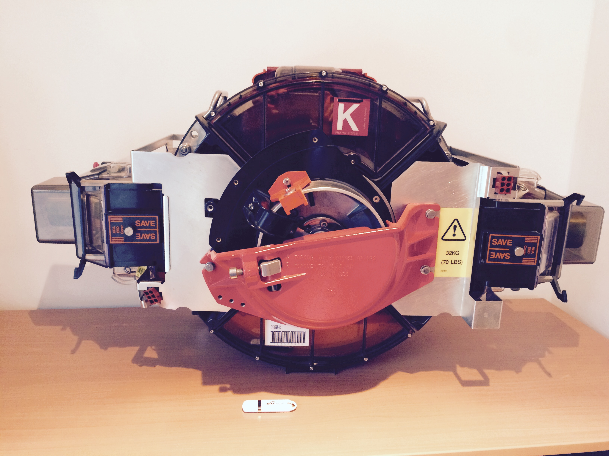
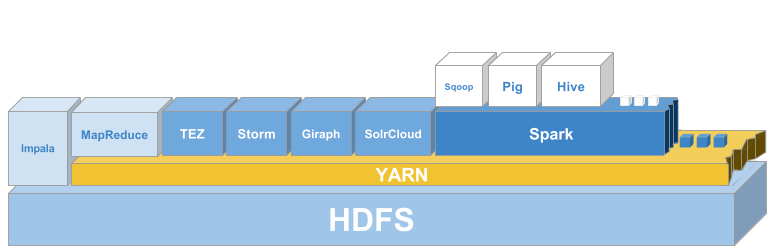

A nicer version of this article can be found here: https://medium.com/p/the-history-of-hadoop-68984a11704
Hadoop was named after an extinct species of elephants, a so called Yellow Hadoop.
Seriously, by now you must have heard the story of how it got its name.
These days, Apache Hadoop is practically synonymous with Big Data (although Apache Spark is catching up fast). I'll tell you an epic story about a passionate, yet gentle man, and his quest to make the entire Internet searchable.
The story begins on a sunny afternoon, sometime in 1997, when Doug Cutting ("the man") started writing the first version of Lucene.
What is Lucene, you ask.
TLDR: Generally speaking, it is what makes Google return results with sub second latency.
Lucene is a full text search library. OK, great, but what is a full text search library? FT search library is used to analyze ordinary text with the purpose of building an index. Index is a data structure that maps each term to its location (think index at the end of a book, with terms and one or more corresponding page numbers), so that when you search for a term, it immediately knows all the places where that term occurs. Well, it’s a bit more complicated than that and the data structure is actually called inverted or inverse index, but I won’t bother you with that stuff. The whole point of index is to make searching fast. Imagine how useable would Google be if every time you searched for something, it went throughout the Internet and collected results. That’s a rather ridiculous notion, right?
It took Cutting only three months to have something usable. A few years went by and Cutting, having experienced a dead code syndrome earlier in his life, wanted other people to use his library, so in 2000, he open sourced Lucene to Source Forge under GPL license (later more permissive, LGPL). He was surprised by the number of people that found the library useful and the amount of great feedback and feature requests he got from those people. Just a year later, in 2001, Lucene moves to Apache Software Foundation. By the end of the year, already having a thriving Apache Lucene community behind him, Cutting turns his focus towards indexing web pages. He is joined by University of Washington graduate student Mike Cafarella, in an effort to index the entire Web. That effort yielded a new Lucene subproject, called Apache Nutch. Nutch is what is known as a web crawler (robot, bot, spider), a program that “crawls” the Internet, going from page to page, by following URLs between them. Something similar as when you surf the Web and after some time notice that you have a myriad of opened tabs in your browser. You can imagine a program that does the same thing, but follows each link from each and every page it encounters. When it fetches a page, Nutch uses Lucene to index the contents of the page.
Page rank algorithm
An important algorithm, that’s used to rank web pages by their relative importance, is called PageRank, after Larry Page, who came up with it. It’s really a simple and brilliant algorithm, which basically counts how many links from other pages on the web point to a page. A page that has the highest count is ranked the highest (shown on top of search results). Of course, that’s not the only method of determining page importance, but it’s certainly the most relevant one. During the course of a single year, Google improves its ranking algorithm with 600 tweaks.
Cutting and Cafarella made an excellent progress. Having Nutch deployed on a single machine (single-core processor, 1GB of RAM, RAID level 1 on eight hard drives, amounting to 1TB, then worth $3 000) they managed to achieve a respectable indexing rate of around 100 pages per second. Often, when applications are developed, a team just wants to get the proof-of-concept of the ground, with performance and scalability merely as afterthoughts. So it’s no surprise that the same thing happened to Cutting and Cafarella. The fact that they have programmed Nutch to be deployed on a single machine turned out to be a double-edged sword. On one side it simplified the operational side of things, but on the other side it effectively limited the total number of pages to 100 million. Understandably, no program (especially one deployed on hardware of that time) could have indexed the entire Internet on a single machine, so they increased the number of machines to four. Since they did not have any underlying cluster management platform, they had to do data interchange between nodes and space allocation manually (disks would fill up), which presented extreme operational challenge and required constant oversight. Any further increase in a number of machines would have resulted in exponential rise of complexity. They desperately needed something that would lift the scalability problem off their shoulders and let them deal with the core problem of indexing the Web.
The origins of HDFS
Being persistent in their effort to build a web scale search engine, Cutting and Cafarella set out to improve Nutch. What they needed, as a foundation of the system, was a distributed storage layer that satisfied the following requirements:
- schemaless (no predefined structure, i.e. no rigid schema with tables and columns)
- durable (once data is written it should never be lost)
- capable of handling component failure (e.g. CPU, disk, memory, network, power supply) without human intervention
- automatically rebalanced (to even out disk space consumption throughout cluster)
They have spent a couple of months trying to solve all those problems and then, out of the bloom, in October 2003, Google published the Google File System paper. When they read the paper they were astonished. It contained blueprints for solving the very same problems they were struggling with.
Having already been deep into the problem area, they used the paper as the specification and started implementing it in Java. It took them better part of 2004, but they did a remarkable job. After it was finished they named it Nutch Distributed File System (NDFS).
The main purpose of this new system was to abstract cluster’s storage so that it presents itself as a single reliable file system, thus hiding all operational complexity from its users.
In accordance with GFS paper, NDFS was designed with relaxed consistency, which made it capable of accepting concurrent writes to the same file without locking everything down into transactions, and consequently yielded substantial performance benefits. Another first class feature of the new system, due to the fact that it was able to handle failures without operator intervention, was that it could have been built out of inexpensive, commodity hardware components.
How Google handled disk failure?
When Google was still in its early days they faced the problem of hard disk failure in their data centers. Since their core business is “data”, they easily justified a decision to gradually replace their failing low-cost disks with more expensive, top of the line ones. As the company rose exponentially, so did the overall number of disks, and soon, they counted hard drives in millions. The decision yielded a longer disk life, when you consider each drive by itself, but in a pool of hardware that large it was still inevitable that disks fail, almost by the hour. That meant that they still had to deal with the exact same problem, so they gradually reverted back to regular, commodity hard drives and instead decided to solve the problem by considering component failure not as exception, but as a regular occurrence. They had to tackle the problem on a higher level, designing software systems that were able to auto-repair themselves. The GFS paper states:
_ The system is built from many inexpensive commodity components that often fail. It must constantly monitor itself and detect, tolerate, and recover promptly from component failures on a routine basis._
Following the GFS paper, Cutting and Cafarella solved the problems of durability and fault-tolerance by splitting each file into 64MB chunks and storing each chunk on 3 different nodes (default replication factor was 3). In the event of component failure the system would automatically notice the defect and re-replicate the chunks that resided on the failed node by using two other healthy replicas.
The failed node therefore, did nothing to the overall state of NDFS. It only meant that chunks that were stored on the failed node had two copies in the system for a short period of time, instead of 3. Once the system used its inherent redundancy to redistribute data to other nodes, replication state of those chunks restored back to 3.
MapReduce
Now, when the operational side of things had been taken care of, Cutting and Cafarella started exploring various data processing models, trying to figure out which algorithm would best fit the distributed nature of NDFS. It was of the utmost importance that the new algorithm had the same scalability characteristics as NDFS. In other words, in order to leverage the power of NDFS, the algorithm had to be able to achieve the highest possible level of parallelism (ability to run on multiple nodes at the same time). It had to be near-linearly scalable, e.g. 8 machines, running algorithm that can be parallelized to run on all nodes, had to be 2 times faster than 4 machines.
Their idea was to somehow dispatch parts of a program to all nodes in a cluster and then, after nodes did their work in parallel, collect all those units of work and merge them into a final result.
Again, Google comes up with a brilliant idea. In December 2004 they published a paper by Jeffrey Dean and Sanjay Ghemawat, named “MapReduce: Simplified Data Processing on Large Clusters”. “That’s it”, our heroes said, hitting themselves on the foreheads, “that’s brilliant, Map parts of a job to all nodes and then Reduce (aggregate) slices of work back to final result”.
The main three problems that MapReduce paper solved are: 1. Parallelization - how to parallelize the computation 2. Distribution - how to distribute the data 3. Fault-tolerance - how to handle component failure
The core part of MapReduce dealt with programmatic resolution of those three problems, which effectively hid away most of the complexities of dealing with large scale distributed systems and allowed it to expose a minimal API, which consisted only of two functions. Wait for it … map and reduce. Inspiration for MapReduce came from Lisp, so for any functional programming language enthusiast it would not have been hard to start writing MapReduce programs after a short introductory training. That’s a testament to how elegant the API really was, compared to previous distributed programming models. One of the key insights for MapReduce was that one should not be forced to move data in order to process it. Instead, a program is sent to where data resides. That is a key differentiator when compared to traditional data warehouse systems and relational databases. There’s simply too much data to be moved around. Now would be a good time to take a peek at Appendix I, which describes how MapReduce really works on a simple HelloWorld example. We can generalize that map takes key/value pair, applies some arbitrary transformation and returns a list of so called intermediate key/value pairs. MapReduce then, behind the scenes, groups those pairs by key, which then become input for the reduce function. The reduce function combines those values in some useful way and produces result. Having seen MapReduce in action in Appendix I, your first instinct could well be that MapReduce is overly complicated for a simple task of counting word frequency of two sentences. And you would be right, of course. There are simpler and more intuitive ways of writing a trivial method for the task at hand, but keep in mind that MapReduce was designed to tackle terabytes and even petabytes of these sentences, from billions of web sites, server logs, click streams, etc.
MapReduce fault-tolerance
Excerpt from the MapReduce paper (slightly paraphrased):
The master pings every worker periodically. If no response is received from a worker in a certain amount of time, the master marks the worker as failed. Any map tasks, in-progress or completed by the failed worker are reset back to their initial idle state, and therefore become eligible for scheduling on other workers.
In July 2005, Cutting reported that MapReduce is integrated into Nutch, as its underlying compute engine.
The rise of Hadoop
In February 2006, Cutting pulled out GDFS and MapReduce out of the Nutch and created a new incubating project, under Lucene umbrella, which they named Hadoop. It consisted of Hadoop Common (core libraries), HDFS (finally with a proper name) and MapReduce.
At roughly the same time, at Yahoo!, a group of engineers led by Eric Baldeschwieler had their fair share of problems. This was going to be the fourth time they were to reimplement Yahoo!’s search backend system, written in C++. Although the system was doing its job, by that time Yahoo!’s data scientists and researchers had already seen the benefits GFS and MapReduce brought to Google and they wanted the same thing. “But that’s written in Java”, engineers protested, “How can it be better than our robust C++ system?”. As the pressure from their bosses and the data team grew, they made the decision to take this brand new, open source system into consideration. “Replace our production system with this prototype?”, you could have heard them saying.
Baldeschwieler and his team chew over the situation for a while and when it became obvious that consensus was not going to be reached Baldeschwieler put his foot down and announced to his team that they were going with Hadoop. In January, 2006 Yahoo! employed Doug Cutting to help the team make the transition. Six months will pass until everyone would realize that moving to Hadoop was the right decision. In retrospect, we could even argue that this very decision was the one that saved Yahoo!. Keep in mind that Google, having appeared a few years back with its blindingly fast and minimal search experience, was dominating the search market, while at the same time, Yahoo!, with its overstuffed home page looked like a thing from the past. Their data science and research teams, with Hadoop at their fingertips, were basically given freedom to play and explore the world’s data. Having previously been confined to only subsets of that data, Hadoop was refreshing. New ideas sprung to life, yielding improvements and fresh new products throughout Yahoo!.
We are now at 2007 and by this time other large, web scale companies have already caught sight of this new and exciting platform. Around this time, Twitter, Facebook, LinkedIn and many others started doing serious work with Hadoop and contributing back tooling and frameworks to the Hadoop open source ecosystem. In February, Yahoo! reported that their production Hadoop cluster is running on 1000 nodes.
2008 was a huge year for Hadoop. At the beginning of the year Hadoop was still a sub-project of Lucene at the Apache Software Foundation (ASF). In January, Hadoop graduated to the top level, due to its dedicated and diverse community of committers and maintainers. Soon, many new auxiliary sub-projects started to appear, like HBase, database on top of HDFS, which was previously hosted at SourceForge. ZooKeeper, distributed system coordinator was added as Hadoop sub-project in May. In October, Yahoo! contributed their higher level programming language on top of MapReduce, Pig. Facebook contributed Hive, first incarnation of SQL on top of MapReduce.
This was also the year when the first professional system integrator dedicated to Hadoop was born. Cloudera was founded by a BerkeleyDB guy Mike Olson, Christophe Bisciglia from Google, Jeff Hamerbacher from Facebook and Amr Awadallah from Yahoo!.
By March 2009, Amazon had already started providing MapReduce hosting service, Elastic MapReduce. In August Cutting leaves Yahoo! and goes to work for Cloudera, as a chief architect.
In 2010, there was already a huge demand for experienced Hadoop engineers. Still at Yahoo!, Baldeschwieler, at the position of VP of Hadoop Software Engineering, took notice how their original Hadoop team was being solicited by other Hadoop players. Yahoo! wasn’t able to offer benefits to their star employees as these new startups could, like high salaries, equity, bonuses etc. The road ahead did not look good. That was a serious problem for Yahoo!, and after some consideration, they decided to support Baldeschwieler in launching a new company. With financial backing from Yahoo!, Hortonworks was bootstrapped in June 2011, by Baldeschwieler and seven of his colleagues, all from Yahoo! and all well established Apache Hadoop PMC (Project Management Committee) members, dedicated to open source. For its unequivocal stance that all their work will always be 100% open source, Hortonworks received community-wide acclamation. In 2012, Yahoo!'s Hadoop cluster counts 42 000 nodes. Number of Hadoop contributors reaches 1200.
Before Hadoop became widespread, even storing large amounts of structured data was problematic. Financial burden of large data silos made organizations discard non-essential information, keeping only the most valuable data. Hadoop revolutionized data storage and made it possible to keep all the data, no matter how important it may be.
A side note about relational databases
Relational databases were designed in 1960s, when a MB of disk storage had a price of today’s TB (yes, the storage capacity increased a million fold). They were born out of limitations of early computers. That was the time when IBM mainframe System/360 wondered the Earth. It had 1MB of RAM and 8MB of tape storage.

_In the figure: IBM 3380 HD and USB stick _
| IBM HD | Commodity HD | USB stick | |
|---|---|---|---|
| Year | 1987 | 2015 | 2015 |
| Weight | 120 Kg | 635 g | 5 g |
| Capacity | 3.78 GB | 3 TB | 128 GB |
| Price | $128 000 | $105.53 | $35.99 |
| Price per GB | $33 862.43 | $0.034 | $0.281 |
In the table: Storage over the years
Twenty years after the emergence of relational databases, a standard PC would come with 128kB of RAM, 10MB of disk storage and, not to forget 360kB in the form of double-sided 5.25 inch floppy disk. Those limitations are long gone, yet we still design systems as if they still apply.
When there’s a change in the information system, we write a new value over the previous one, consequently keeping only the most recent facts. Knowledge, trends, predictions are all derived from history, by observing how a certain variable has changed over time. Think about this for a minute. Imagine what the world would look like if we only knew the most recent value of everything. Rich Hickey, author of a brilliant LISP-family, functional programming language, Clojure, in his talk “Value of values” brings these points home beautifully. He calls it PLOP, place oriented programming. The majority of our systems, both databases and programming languages are still focused on place, i.e. memory address, disk sector; although we have virtually unlimited supply of memory. Since values are represented by reference, i.e. by their location in memory/database, in order to access any value in a shared environment we have to “stop the world” until we successfully retrieve it. What do we really convey when we pass a reference to a mutable variable or a primary key to a third party? Nothing, since that place can be changed before they get to it.
What was our profit on this date, 5 years ago? How much yellow, stuffed elephants have we sold in the first 88 days of the previous year? How has monthly sales of spark plugs been fluctuating during the past 4 years? What were the effects of that marketing campaign we ran 8 years ago? Perhaps you would say that you do, in fact, keep a certain amount of history in your relational database. Was it fun writing a query that returns the current values? Is that query fast? Is it scalable?
The enormous benefit of information about history is either discarded, stored in expensive, specialized systems or force fitted into a RDB.
Nevertheless, we, as IT people, being closer to that infrastructure, took care of our needs. Source control systems and machine logs don’t discard information. Do we commit a new source file to source control over the previous one? Do we keep just the latest log message in our server logs? Of course not!
I argue that RDBs will be replaced with “immutable databases”. One such database is Rich Hickey’s own Datomic, a brilliant piece of engineering, if I may say so.
This whole outline is a paraphrased Rich Hickey’s talk “Value of values” , which I wholeheartedly recommend.
Enter YARN
Where Hadoop was lacking the most, was knitting. Although huge clusters of looms, powered by MapReduce were happily weaving away, it became increasingly obvious that more serious wool working machinery was long due. Enter YARN.
Now seriously, where Hadoop version 1 was really lacking the most, was its rather monolithic component, MapReduce. The root of all problems was the fact that MapReduce had too many responsibilities. It was practically in charge of all functionality above HDFS layer, assigning cluster resources and managing job execution (system), doing data processing (engine) and interfacing towards clients (API). Consequently, there was no other choice for higher level frameworks other than to build on top of MapReduce.
Figure: Workload types built on top of MapReduce
The fact that MapReduce was batch oriented at its core hindered latency of application frameworks build on top of it. The performance of iterative queries, usually required by machine learning and graph processing algorithms, took the biggest toll.
Although MapReduce fulfilled its mission of crunching previously insurmountable volumes of data, it became obvious that a more general and more flexible platform atop HDFS was necessary.
On Fri, 03 Aug 2012 07:51:39 GMT the final decision was made. The next generation data-processing framework, MapReduce v2, code named YARN (Yet Another Resource Negotiator), will be pulled out from MapReduce codebase and established as a separate Hadoop sub-project. It has been a long road until this point, as work on YARN (then known as MR-297) was initiated back in 2006 by Arun Murthy from Yahoo!, later one of the Hortonworks founders.
In order to generalize processing capability, the resource management, workflow management and fault-tolerance components were removed from MapReduce, a user-facing framework and transferred into YARN, effectively decoupling cluster operations from the data pipeline.
Emergence of YARN marked a turning point for Hadoop. It has democratized application framework domain, spurring innovation throughout the ecosystem and yielding numerous new, purpose-built frameworks. MapReduce was altered (in a fully backwards compatible way) so that it now runs on top of YARN as one of many different application frameworks.
 In the figure: Hadoop YARN workloads types
In the figure: Hadoop YARN workloads types
 In the figure: Hadoop YARN products
The hot topic in Hadoop circles is currently main memory. There are plans to do something similar with main memory as what HDFS did to hard drives. YARN should become aware and be in charge of managing different classes of memory. Slower and faster hard disks, solid state drives and main memory (RAM) should all be governed by YARN. Application frameworks should be able to utilize different types of memory for different purposes, as they see fit.